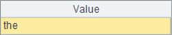

l Problem
In a normal English document, words are separated by blank, comma, full stop, and carriage return, and the sign ¡°-¡± is used to connect the characters before and after the carriage return into a word.
Now suppose there is such a document according to which you need to get the total number of different words, count the appearance frequency of each word, and select the word with the highest appearance frequency.
l Tip
Load the document, break the document content into a sequence consisting of single characters, and then convert all upper-case letters in the sequence into lower-case letters and change all non-letter characters in the sequence into blanks. Delete the consecutive blanks into one blank, combine members of the sequence into a string, and then according to blanks break the string again into sequences, each of which is composed of one word. Group the same words into one group.The returned sub-group with the largest length contains the word with the highest appearance frequency.
1. Read the document content.
2. Break the document content into a sequence consisting of single characters, and then convert all upper-case letters in the sequence into lower-case letters and change all non-letter characters in the sequence into blanks.
3. Delete consecutive blanks into one blank, combine members of the sequence to form a string, and then according to blanks break the string again into sequences, each of which consists of one word.
4. Group the same words into one group, and the returned sub-group with the largest length contains the word with the highest appearance frequency.
l Code
|
|
A |
|
|
1 |
E:\\esProc exercise\\word.txt |
|
|
2 |
=file(A1).read() |
|
|
3 |
=A2.split().(if(isalpha(~), lower(~)," " )) |
Break the document content into sequence consisting of single characters, and then convert all upper-case letters in the sequence into lower-case letters and change all non-letter characters in the sequence into blanks. |
|
4 |
=A3.select(~!=" " || ~[-1]!=" " ) |
Delete consecutive blanks into one blank. |
|
5 |
=A4.concat().split(" ") |
Put sequences together to form a string, and then break the string again with blank into sequences, so they form sequences in which one word is a member. |
|
6 |
=A5.group().maxp(~.len())(1) |
Group sequences, query the member with the largest length after grouping, and it is the word with the highest appearance frequency. |
l Result
